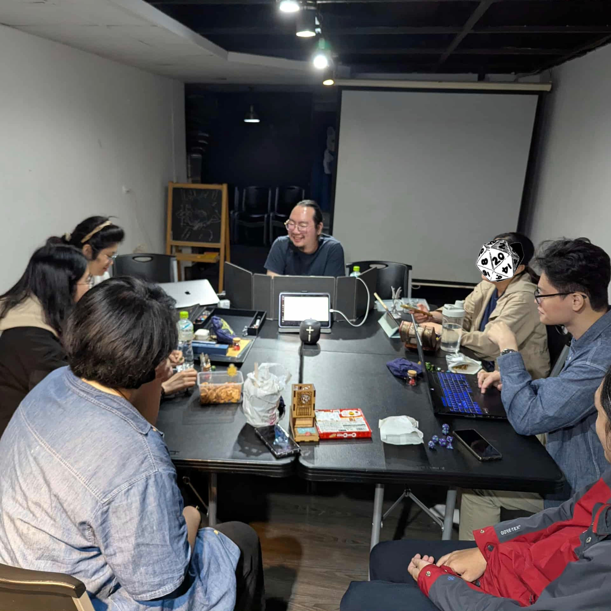

TELL US YOUR STORY
Rugatha D&D 跑團回饋
* 為必填欄位，文字回饋可自由選填。
填寫後可先確認內容，再正式送出。私下回饋僅供主辦方閱讀；公開回饋可匿名分享於社群。
謝謝你的填答！
回饋已成功送達。你的回饋，是我們進步的動力，也期待你再次參與我們的團務。
期待下一場冒險，再次與你相見。
有任何問題，歡迎寫信給我們：rugathadnd@gmail.com
 ← 體驗團介紹
← 體驗團介紹

TELL US YOUR STORY
* 為必填欄位，文字回饋可自由選填。
填寫後可先確認內容，再正式送出。私下回饋僅供主辦方閱讀；公開回饋可匿名分享於社群。
回饋已成功送達。你的回饋，是我們進步的動力，也期待你再次參與我們的團務。
有任何問題，歡迎寫信給我們：rugathadnd@gmail.com